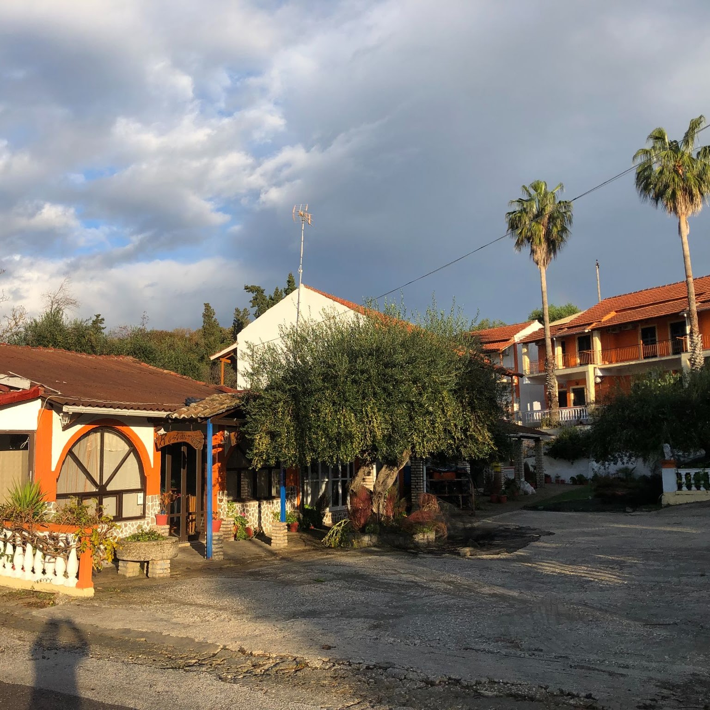
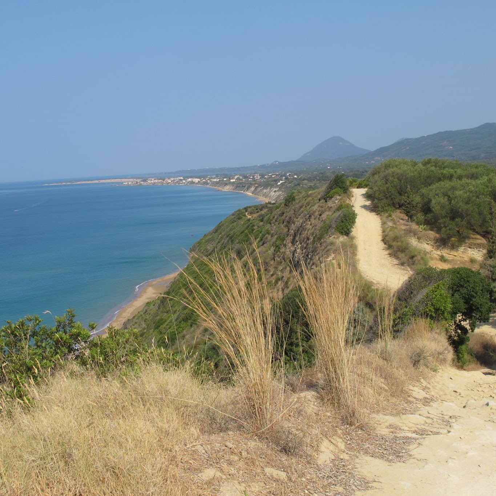

Výlety
Korfu i okolní ostrovy nabízejí spoustu krásných míst. Organizované zájezdy lze objednat v taverně Maltas kousek od nás, nebo na internetu. S individuálními výlety rádi poradíme.

Info

Korfu i okolní ostrovy nabízejí spoustu krásných míst. Organizované zájezdy lze objednat v taverně Maltas kousek od nás, nebo na internetu. S individuálními výlety rádi poradíme.

Cenu letního pronájmu teď těžko odhadnout. Obecně: čím delší pronájem, tím nižší cena za den. Záleží i na měsíci a věku řidiče.
Orientační ceny na letišti: corfuairportcarrentals.com, v roce 2025 kamarádi hojně používali drive-corfu.com, případně bestcarrentalcorfu.com.
Ty se hodí, když si auto berete na letišti na celý pobyt. Krátkodobý pronájem auta, skútru, čtyřkolky nebo kola jde dohodnout v restauraci pár metrů od nás, nebo na internetu.
Srovnávejte víc než cenu: pojištění, kilometry na den, počet řidičů. Některé půjčovny chtějí striktně kreditní kartu, i když většina lidí má jen debetní.
Naše soukromé auto nepůjčujeme - potřebujeme s ním jezdit sami. Komerční půjčování privátního auta navíc dělá majiteli problém s místními úřady.
+30 210 671 37 55
+30 210 671 97 01
konzulární oddělení +30 210 672 53 32